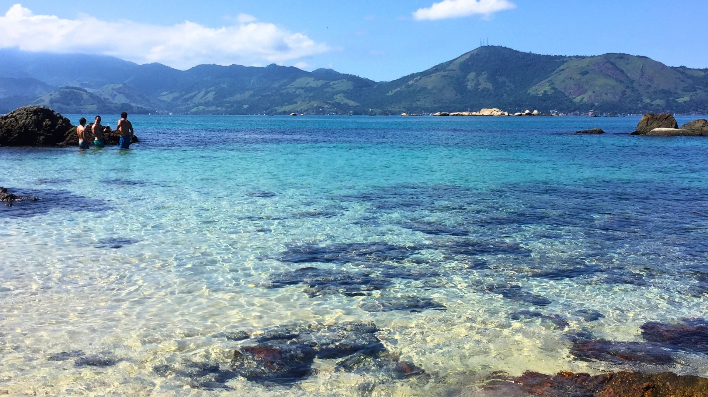

RUMO 090°

Ilha Tour 90°
Lagoa Azul e os pontos exclusivos da Costa Norte, fora do roteiro de todo mundo.
Ver roteiro
Travessia rápida de Flex Boat por Mangaratiba e passeios pelos cenários mais bonitos da Costa Verde. Frota própria, marinheiros experientes e segurança em primeiro lugar.
Mangaratiba ⇄ Ilha Grande · Flex BoatO ponto mais próximo do Rio, com estacionamento em conta. Mangaratiba é o ponto mais próximo do Rio de Janeiro — e fomos os primeiros a fazer a travessia de Flex Boat por aqui.

Seis roteiros de passeio de barco e de lancha em Ilha Grande e Angra. Cada um inclui água mineral, cooler com gelo, flutuadores, coletes e o suporte da nossa equipe a bordo. Saída pela Vila do Abraão. Preços sob consulta.
Lagoa Azul e os pontos exclusivos da Costa Norte, fora do roteiro de todo mundo.
Ver roteiro
Lagoa Azul, Lagoa Verde e as preferidas da Costa Norte, sobre águas tranquilas e cristalinas.
Ver roteiro
As ilhas mais desejadas de Angra: água cristalina, praias de cartão-postal e muito snorkel.
Ver roteiro

Praia dos Meros, Lagoa Verde e Araçatibinha: a combinação que só a Vou de Barco faz.
Ver roteiro
Um salão de pedra à beira-mar com água que parece brilhar, para quem já fez os clássicos.
Ver roteiroA Vou de Barco é uma operação náutica com frota e tripulação próprias, dedicada a levar você até a Ilha Grande e a mostrar o melhor da Costa Verde no mar. Nascemos para resolver um problema real: chegar à Ilha mais rápido e confortável para quem vem do Rio.
Mangaratiba é o ponto mais próximo, mas ninguém fazia a travessia de Flex Boat por ali. Encaramos o desafio com marinheiros experientes e embarcação preparada, e nos tornamos pioneiros nessa rota, hoje consolidada e referência na região. Levamos segurança e qualidade a sério: embarcações revisadas, motor em dia e coletes para todos a bordo.
Temos agência de turismo física no Centro de Mangaratiba e operação regularizada (cadastro no CADASTUR, do Ministério do Turismo). Aqui você fala com gente de verdade, do cais até o seu destino.

Fazemos a travessia entre Mangaratiba e a Vila do Abraão, na Ilha Grande, em Flex Boat. O trajeto leva cerca de 40 minutos. Mangaratiba é o ponto mais próximo do Rio de Janeiro.
Saídas de Mangaratiba para Abraão: 09h00, 13h30 e 16h30. Saídas de Abraão para Mangaratiba: 10h00, 14h00 e 17h15. Recomendamos chegar ao cais com antecedência.
Você escolhe ida, volta ou ida e volta. A passagem inclui o transporte de bagagem padrão. Para grupos ou bagagem extra, fale com a gente pelo WhatsApp.
Todos os passeios incluem água mineral, cooler com gelo, flutuadores, coletes salva-vidas e o suporte da nossa equipe a bordo do início ao fim.
A operação depende das condições de clima e maré, sempre pensando na sua segurança. Em dias ruins, podemos ajustar paradas ou remarcar. A confirmação é feita com você pelo WhatsApp.
Somos uma operação náutica com frota e tripulação próprias, pioneira na travessia de Flex Boat por Mangaratiba. Levamos segurança e qualidade a sério: embarcações revisadas, motor em dia e coletes para todos a bordo.
Preencha e a gente continua o atendimento pelo WhatsApp, com disponibilidade e valores para a sua data.